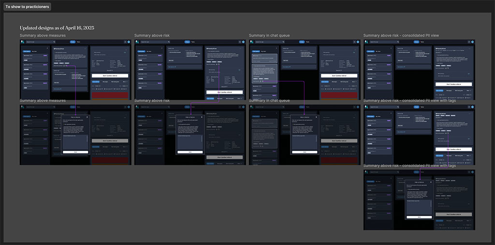

Ten seconds to remember everything.
One summary, ready before the session.
AI case-note summaries for Soluna's practitioners, designed with clinicians in the loop.
Illustrative content. No service-user data.
Summary sheet, empty
Illustrative content. No service-user data.
Nothing left to hunt for.
Summary sheet, in progress
Prepared in under thirty seconds.
Act three
Designing
for trust.
A summary could state something that never happened.
Stale context could read as current.
A confident summary could be trusted more than it should.
Sensitive details could be exposed to the wrong eyes.
Every statement carries its source.
Recency is shown, and the last session is dated.
The summary is a starting point; a clinician reviews it before use and can rate it.
PII and risk indicators are highlighted for the practitioner, and only defined data is summarised.
We were embedded with Kooth's Data Science team, alongside a Lead UX Researcher, and partnered directly with clinicians, clinical leadership and service delivery teams.
We asked how we might make the practitioner well prepared for a chat, in 30 seconds or less, then ran multiple ideation rounds and prototype cycles with stakeholder reviews and company-wide demos.

Ideation
How might we make the practitioner well prepared for a chat, in 30 seconds or less?
Also include list of previous coaches, so the next one can contact them to share info/ideas
Quick reference “face sheet” with all pertinent info available at a glance
Improved SU profile inclusive of risk profile, presenting issues, etc. (snapshot)
AI chat summary created
Sentiment analysis of previous chats to get an idea of the user’s mood and concerns
Key themes as a word cloud sized by frequency
Data-summary dashboard that is scannable
Bring all user data to one screen: usage, demographics, sessions, risk flags, goals, chat summary
Previous case note summaries by LLMs (with feedback)
Key themes from past chats, content, tools, etc. for each SU
Live prototype. Click through it.
SU History Summaries, Figma prototype.
Approved for development.
Projected: 10 to 15 minutes back per session, per practitioner.
This project reflects my approach to AI design in regulated, human-centred environments: pairing technical possibility with ethical responsibility, clinical trust and measurable operational impact.

Soluna is a Kooth Digital Health product. Case study by Mike Jerugim.